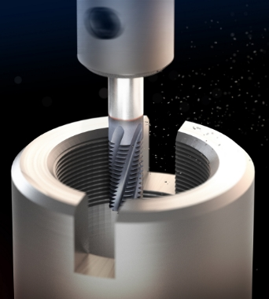
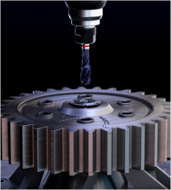
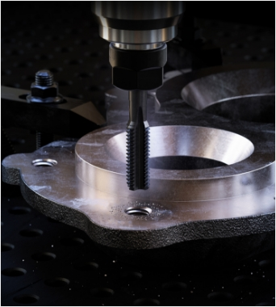
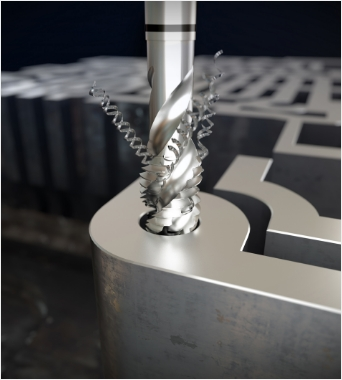
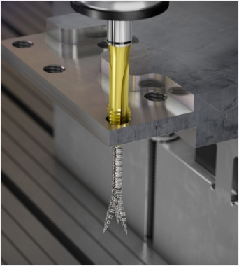
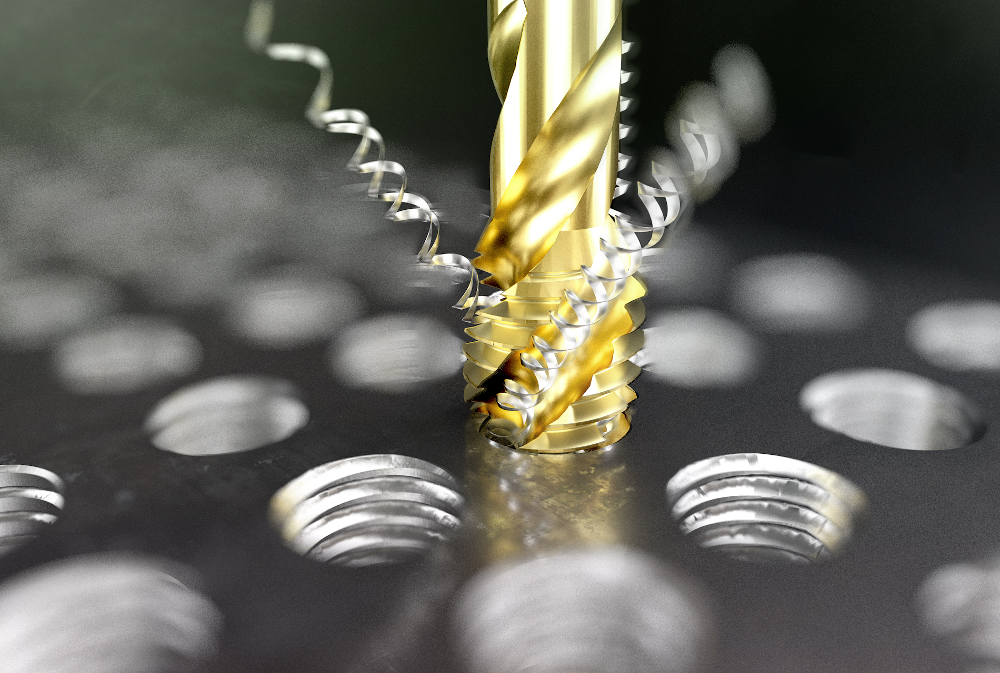
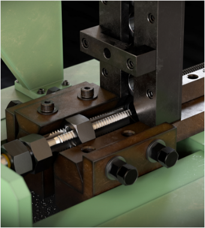
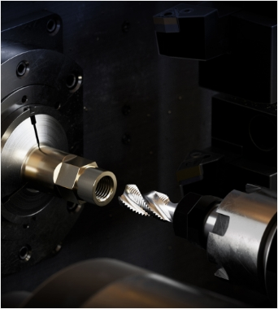
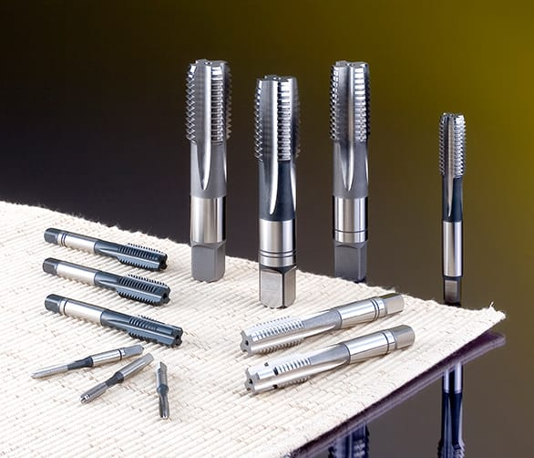

HOLEMAKING
THREADING
MILLING
TURNING
TOOLING SYSTEM
Thread Mill
Solid Carbide
HSS
쓰레드 밀

쓰레드 밀
관통홀, 막힌홀 / 내경, 외경 크기에 관계없이 다양한 등급, 직경의 나사가공이 하나로 가능한 공구
솔리드 카바이드

초경탭
고경도강 가공용 솔리드 초경 및 HSS-E tap

주철용 초경탭
주물,주철 가공용 솔리드 초경 및 HSS-E tap
HSS

프라임탭
CNC 장비에서 고속 가공용 탭

콤보탭
범용 탭

멀티원탭
다양한 피삭재에서 탁월한 성능의 탭

너트탭
너트 제작용 탭

관용탭(파이프탭)
파이프의 내경 가공용 탭

핸드탭
직선 형태의 1SET(3pcs) 탭으로 암나사 가공용 수공구
전조탭(롤탭)
칩배출 없이 소성변형에 의해 암나사를 가공하는 홈이 없는 탭
인써트코일탭
코일 전용 탭
DIN규격탭
DIN규격의 암나사 가공용 탭